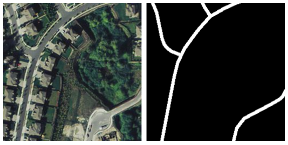
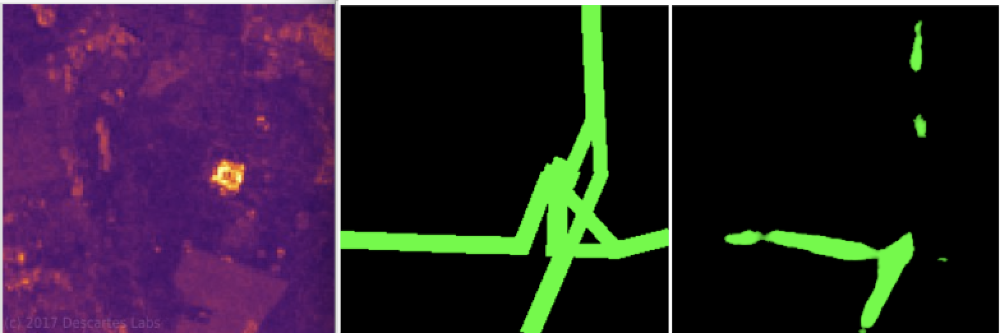
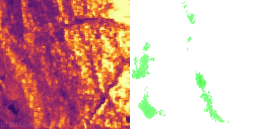
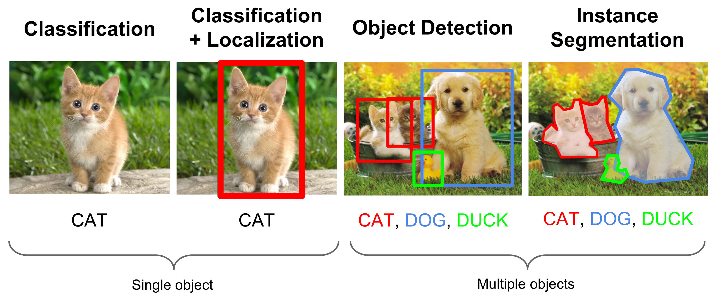
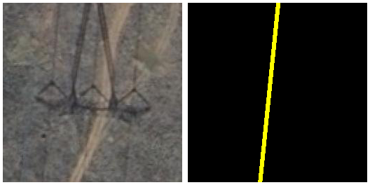
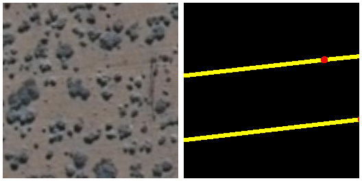
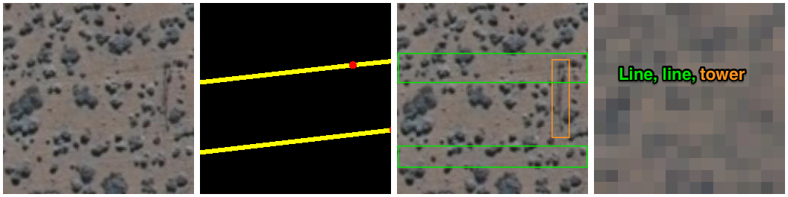

Mapping Electricity Grid Networks from Space
Development Seed +
World Bank
Machine Learning Summary
imagery (input) + OSM (ground truth) = amazing training data

In general, one of the biggest challenges in machine learning is getting good training data, and this is what I mean about imagery + OSM being a great fit for machine learning: it represents an amazing source of training data.
Training a Model
- Apply model to inputs
- Compare model's prediction to ground truth
- Tweak the model based on error
- Repeat (a lot)
Applying ML to the Electricity Grid
Approach 1: Low Resolution Radar
Syntentic
Aperature
Radar
Results


Challenges:
- Label Data Quantity
- Terrain
Scaling the SAR method
- Better data access
- Output + Pipeline
- Terrain Normalization
Quick Interlude

Approach 2: High Resolution Optical Imagery



Next Approaches
- Detection
- Classification
- Imagery Pre-processing
- More/Better Training Data
Questions?